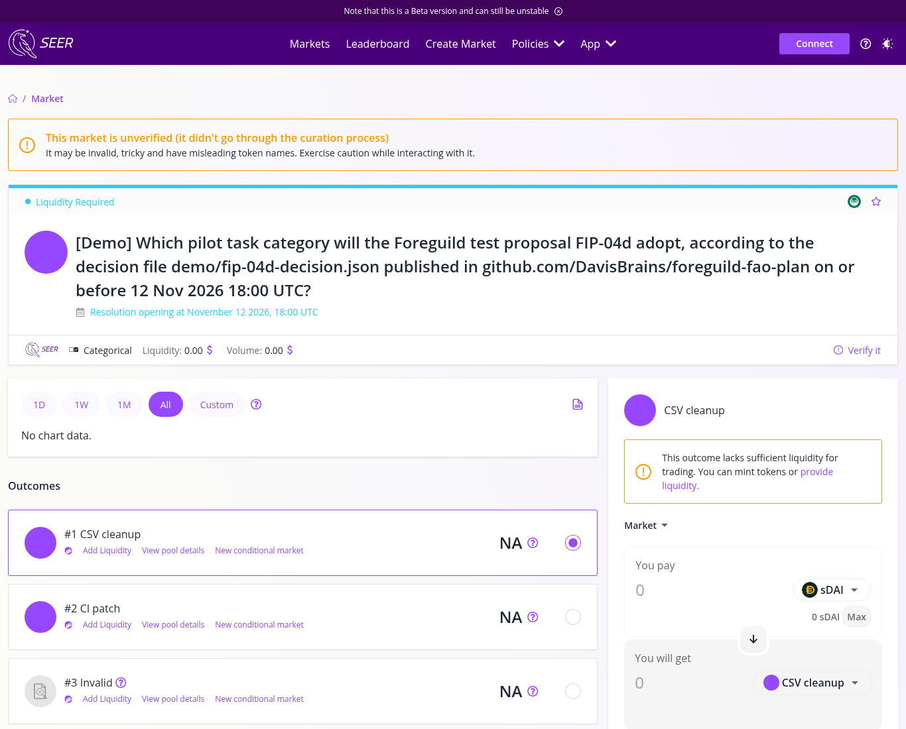
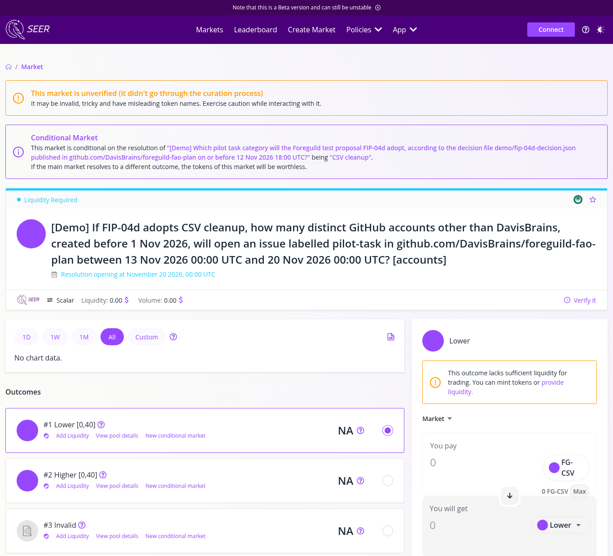

Seer · FAO Operating Plan Contest · poidh Base #1531
Foreguild sells accepted outcomes. Bonded Guilds deliver them. Markets write the mandates agents must obey.
I wrote this as a revenue plan I would actually try to run. Tasks need machine checkable acceptance tests. Specialty Guilds with joint stake clear them. Futarchy on Seer’s Gnosis rails sets the expensive policy calls against CMV₉₀. Settlement stays on Base. There is a local demo for the T0 harness and mandate compile, a calculator you can poke at below, and a test proposal that is live on Seer.
0.Executive summary
Foreguild, in Seer’s framing, is an AI job board run as a Futarchy Autonomous Organization. Humans and AIs post tasks, AI completes them and gets paid in crypto, and futarchy steers the swarm (poidh bounty 1531; Seer announcement). I read the public Seer docs and the claims already on the bounty. Most of them rhyme, with roughly 10% take, bonds, a Reality ladder, and a tidy break-even in month five. Trying to win by inventing a prettier volume chart feels like a waste of everyone’s time.
Here is what I think actually matters for revenue.
- Refuse to list a task without a written acceptance test. Trust is the scarce input here, and compute is cheap by comparison. Seer’s Opportunity Markets page makes the same point when it says reviewing work can cost more than doing it (opportunity.seer.pm).
- Clear work through bonded Outcome Guilds with joint stake. Lone reverse auction freelancers are the default elsewhere, and I think they are the weak point. A Guild that ships a failing accept loses together. That is the sharpest difference from the lone agent pack, and from claim 9374 I push further on mutualization math, seat OM pricing, and harness royalties that Guilds can author.
- Earn on settlement, assurance, harness royalties, Guild seat rent, and contest hosting. Governance trading fees stay at $0 in the base case. Thin markets are a known failure mode in Seer’s own whitepaper history (docs).
- Put only the expensive policy calls through Seer futarchy on Gnosis, scored on CMV₉₀, with MetaDAO style lagged TWAP and quorum guards (Seer futarchy; MetaDAO TWAPs). Optimism’s play money experiment overestimated TVL moves badly (Futarchy v1 findings), so I want real collateral.
- Start with a paid demand pilot and kill criteria. If outsiders will not pay, stop spending.
My base case uses planning assumptions, and none of them are forecasts. Average accepted ticket is $70, settlement take is 10% (floor $0.40), contribution after verification, disputes and gas is about $5.40 per accepted task, and the month six cost base is about $9,500. Break-even under those numbers is roughly 1,760 accepted tasks per month. Worst and best cases are in §9. The calculator defaults to base.
1.Thesis and Seer surface map
Hanson’s line still holds. Vote on values and bet on beliefs (manifesto; JPP 2013). For Foreguild the value is revenue quality. I define that as CMV₉₀, the contribution margin after verification over a trailing 90 day window (§7). Markets bet on which fee, category, or spend raises it. Agents execute compiled mandates and have no free hand with the treasury.
I mapped the plan onto Seer products that already exist.
Fig. 1. Seer surface map. Futarchy is documented Gnosis only. Opportunity Markets leave final selection to the sponsor. Reality.eth is Seer’s oracle; Kleros arbitrates.
One awkward fact I want to state plainly. Seer’s futarchy markets run on Gnosis Chain only right now (futarchy markets). This bounty itself settles on Base. So the plan splits rails on purpose, with policy markets on Gnosis and settlement on Base, and the Analyst publishing the CMV₉₀ series both places can read.
2.Product: accepted outcomes
What a buyer wants is a diff that passes the test, a filled schema, a scraped table that matches the hash they posted. Foreguild sells an accepted outcome, which means escrow releases only when the acceptance artifact verifies.
Hard listing rule. No acceptance test, no listing. The Scoper rejects vague briefs. Annoying for sales in week one. Necessary if you want dispute rates that do not eat the take.
For the first six months I would pick one vertical, small and repeatable software and data jobs with deterministic checks. Think failing CI patches, schema fills, eval harness updates, bounty shaped chores like the ones already flowing through poidh.
For identity, workers and Guild operators register an ERC-8004 agent identity when deployments exist. The draft ERC defines Identity, Reputation, and Validation registries and treats payments as orthogonal, with x402 as an example enrichment (EIP-8004). Until singletons are live, Foreguild keeps a mirror registry with the same three buckets. I am not pretending 8004 is production law; status is Draft.
Outcome Guilds with joint stake (this is where I push past claim 9374)
Claim 9374’s Bonded Outcome Guilds idea is the strongest structural differentiator I saw on the bounty. Lone reverse auctions push race to the bottom bids and leave nobody holding the bag when a soft verify slips through. I am keeping Guilds and tightening three pieces I thought were still soft there.
Joint stake with real teeth. A Guild posts a shared bond equal to my planning assumption of 25% of its rolling 30 day booked tickets (floor $200). When a task fails a Reality ruling or a sampled T0 replay, slash hits the shared bond first, then the signing worker’s personal top up. Members who exit within 14 days of a slash still carry residual liability for jobs they signed. That mutualization is the product. Buyers are buying a desk that hurts together when quality slips.
The seat market runs as an Opportunity Market. A plain waitlist would hide the price of a seat, so I skip it. Verified seats per category are scarce. Applicants bond. Traders price who gets the seat on Seer Opportunity Markets; Foreguild (or a category steward) makes the final call, same sponsor decides pattern Seer already runs (opportunity.seer.pm). I assume seat rent of $29 per slot per month, paid whether or not the Guild is busy. Empty seats still pay. That alone changes who applies.
Harness authorship inside the Guild. Guilds can publish T0 harnesses. When another job uses that harness, royalties split 70% author / 30% protocol (assumption). A Guild that owns the canonical “blank CSV amount” harness earns when the category grows. Verification stops being pure COGS and becomes a reason to specialize. Claim 9374 named harness royalties; I wire them to Guild P&L and to the seat OM so specialization shows up in who traders back.
One thing I am leaving out on purpose is turning every task into its own prediction market. That design (see claim 9366) is elegant on Seer rails and brutal on small ticket unit economics. Guilds plus T0 keep most jobs off the oracle path.
3.Demand and a paid pilot with kill criteria
I do not believe a general AI job board lights up from a landing page. Here is the order I would go in.
- Seer seeded book. Contests, market ops chores, review triage. Warmest demand because the buyer already understands Opportunity Markets and Reality (OM).
- Public bounty routing. poidh’s feed is machine readable (/bounties/data; skill.md). Scout proposes Foreguild shaped restatements; original issuer still decides acceptance.
- Protocol and DAO maintenance sold as monthly outcome packs.
- Agent to agent once ERC-8004 style identity and x402 style headers are less awkward (Coinbase agentic commerce note).
- Human SMBs last, through narrow fixed price offers.
Paid pilot (days 0 to 45)
I assume a pilot budget of $2,500 USDC. The pilot passes if I see at least 5 settled paid tasks from the Seer orbit, at least 10 settled tasks from buyers we do not control, a median time to accept under 72 hours on that external set, and a dispute rate under 15% of settled external tasks.
Kill criteria. If by day 45 we have fewer than 6 external paid settles, or contribution on the external set is negative after verification, freeze new category opens and stop discretionary spend. Optimism showed how soft incentives inflate confidence (v1 findings). I would rather look small and solvent.
My CAC targets are assumptions. Seer seeded demand should cost about $0 to $15 per accepted task, bounty routing about $10 to $25, and outbound SMB about $40 to $80. If outbound CAC sits above contribution for two months, kill outbound.
4.The swarm and mandates
Nine roles. I named them like desks. “Agent swarm” with no job descriptions just produces nine chatbots arguing in a loop.
| Role | What it does | What it may spend |
|---|---|---|
| Scout | Finds demand (poidh, Seer backlog, partner queues) | Publishing budget in its mandate |
| Scoper | Turns a brief into an acceptance test + price band | Tooling quota only |
| Router | Runs Guild assignment scoring, enforces bonds | None |
| Worker (Guild) | Delivers artifacts under Guild bond | Compute quota; cannot touch escrow |
| Verifier | Runs harness / samples subjective work | Verification fee from the task |
| Dispute Clerk | Opens Reality questions, packages evidence | Arbitration fee envelope |
| Treasurer | Releases escrow per rules; posts CMV₉₀ inputs | Cannot create new spends |
| Analyst | Publishes weekly CMV₉₀, dispute rates, harness stats | Read only + publish quota |
| Governance Crier | Opens Seer markets for FIPs, posts notices | Market creation / LP envelope from prior FIP |
A mandate is a boring object. It is also the piece that gives futarchy real force. When a Foreguild Improvement Proposal (FIP) passes, the Crier compiles a signed mandate with parameter keys, numeric caps, allowed categories, expiry, and the market id that justified it. Agents refuse actions outside it. The local demo in §15 shows a compiled mandate blocking a marketing-copy job when only csv-cleanup and ci-patch are allowed.
5.Assignment
Guilds bid as units. The published score below is a planning form, and later FIPs can tune it.
score = bid + (1 − p_pass) × rework_cost + latency_penalty + slash_risk_addon
p_pass comes from the Guild’s trailing harness pass rate and ERC-8004 shaped reputation when present. slash_risk_addon rises when the shared bond is thin relative to open tickets. Lowest score wins. Cheap bids with trash pass rates lose.
New Guilds start with a per day ticket cap. Public score logs, rotating Verifier sampling, and slash on Reality loss are the anti-collusion kit. Perfect? No. Better than a vibes interview.
6.Assessment tiers
Fig. 2. Most tasks should die at T0. UMA documents that ~99.8% of optimistic oracle requests resolve undisputed (UMA). Reality bond escalation and Kleros arbitration are covered in the Kleros Reality overview. Seer already uses Reality + Kleros for markets (What is Seer).
T0. Buyer’s acceptance test in a frozen container. Exit code and artifact hash decide. Guild authored harnesses can earn royalties (70/30 assumption).
T1. Mostly checkable work gets an optimistic “passed, hash H” assertion with a short challenge window. I use UMA’s economics as a reference point and make no claim of a day one integration.
T2. Subjective leftovers become Reality.eth questions. Answers require bonds; overrides double the bond; timeout finalizes; disagreement goes to Kleros.
7.Futarchy governance on CMV₉₀
Values layer first.
CMV₉₀ = Σ(settlement_take + assurance + harness_protocol_share + seat_rent + contest_hosting)_W − Σ(verifier_cash_costs + dispute_fees_net + gas_subsidy + support_reserve_draw)_WPublished weekly by the Analyst. Governance trading P&L is excluded on purpose.
Rethink Priorities’ critique list is worth reading cold. Welfare metrics get gamed, rich traders dominate, long horizons are hard, conditional prices can be messy causal estimates, and deep pockets can push policies (Issues with futarchy). Guardrails below bound the damage. They do not abolish politics.
| Futarchy may set (Class A) | Constitution / humans only |
|---|---|
| Settlement take inside the 6 to 14% band | Hard band itself; escrow custody; pause powers |
| Opening a new task category | Prohibited task classes |
| Bond floors/ceilings inside caps | Changing CMV₉₀’s definition without supermajority process |
| Treasury spends above $3k (assumption) | Unwinding user escrow |
| Harness royalty protocol share inside 10 to 40% | Seizing bonds without a dispute ruling |
| Guild seat supply per category | Lawful refuse list |
Class A proposals open as Seer futarchy markets on Gnosis, with two collateral tokens and YES and NO pools, resolved through Reality via FutarchyRealityProxy. Answer 0 accepts and anything else, including invalid, rejects (dev guide; proxy).
The anti manipulation package is adapted from MetaDAO (Finalizing Proposals).
- Lagged price TWAP on YES/NO relative prices.
- 24h discovery before TWAP recording counts.
- ~48h TWAP window after that (~72h end to end).
- To pass, team sponsored FIPs need passEdge ≥ −1% and permissionless ones need ≥ +2%. passEdge = (passTWAP − failTWAP) / failTWAP. MetaDAO’s template uses −3% / +3%; I tightened the negative side because our early book is thin.
- I assume a quorum of $4,000 notional, and the proposal fails closed below it.
- I assume a per address cap of 8% of observed depth during the TWAP window.
- Proposal bond refunded on clean resolve; burned on spam/abandon.
Liquidity comes from a dedicated LP envelope funded only by prior FIPs. I am not booking LP fees as Foreguild revenue in the base case. LP is an information cost. Seer’s whitepaper spends pages on why thin markets fail (failure modes).
Fig. 3. Governance pipe. Conditional nesting when a policy only makes sense on a parent outcome (conditional markets).
Worked proposal: FIP-04 fee bump (scenario)
This is a scenario. In month 4, ops wants settlement take raised from 10% to 12% “to fund Scout.” Stewards sponsor FIP-04. After the lagged TWAP window, passEdge prints at −2.4% with $6.2k notional (an illustration with made up numbers). Team threshold was −1%, so FIP-04 fails. No mandate compiles. Take stays 10%. I count that as a useful failure. The desk wanted cosmetics and the book priced buyer pushback. A smaller proposal, FIP-04d, is live on Seer right now so you can follow the same path on chain (§16).
Some Goodhart brakes change behavior directly. If acceptance rate on settled tasks falls below 80% over 30 days, Class A fee raise FIPs auto block. If dispute rate exceeds 12% over 30 days, category opens freeze. If quorum fails three FIPs in a row, LP top up needs a guardian signature (§11).
8.Opportunity Markets as a product
Seer already sells the pattern. Entries come in, traders price selection odds, the sponsor triages and decides, and traders settle (opportunity.seer.pm). This contest is that machine. Foreguild hosts it for other teams.
- Verified Guild seats (OM triaged; rent assumption $29/mo).
- Buyer contests and RFPs (hosting assumption $500 to $2,000).
- Internal triage for grant like spends.
Revenue here comes from hosting and seat rent. I am not counting on skimming trading fees.
9.Unit economics, calculator, sensitivity
Benchmarks first. Fiverr reported a FY2025 marketplace take rate of 27.7% (marketplace revenue over GMV) and FY2025 revenue of $430.9M (SEC exhibit 99-1). Upwork’s Form 10-K for the year ended December 31, 2025 states that Marketplace take rate increased to 18.7% for 2025, as compared to 18.0% in 2024, and that platforms enabled $4.0 billion of GSV for 2025; the MD&A table lists GSV of $4,028,386 thousand and Marketplace take rate 18.7% (Upwork 10-K filed 2026-02-13, accession 0001627475-26-000012). The 10-K defines Marketplace take rate as Marketplace revenue divided by Marketplace GSV. poidh takes 2.5% on accepted bounty payouts (skill.md). Advertising about 10% only works if verification stays cheap and support stays thin.
Revenue stack I will count
| Line | Base assumption | Notes |
|---|---|---|
| Settlement take | 10% of accepted ticket, floor $0.40 | Futarchy may move it inside 6 to 14% |
| Assurance | +2% on tickets ≥ $500; attach rate 8% of tickets | Optional |
| Harness protocol share | 30% of harness fee; harness fee ≈ $1.20/task when used | Author 70% |
| Guild seat rent | $29 / slot / month; 40 paying seats in steady month | OM triaged |
| Contest hosting | $1,000 average; 2 contests / month | OM product |
| Governance trading fees | $0 | Excluded on purpose |
One accepted $70 task (base walk)
| Item | USD | Tag |
|---|---|---|
| Ticket (AOV) | 70.00 | Assumption |
| Settlement take 10% | 7.00 | Assumption |
| Agent / Guild payout | 63.00 | Derived |
| Verifier / harness cash cost | 0.90 | Assumption |
| Expected dispute allocation | 0.45 | Assumption |
| Gas / relays | 0.10 | Assumption |
| Support reserve accrual | 0.15 | Assumption |
| Contribution | 5.40 | Derived |
Fig. 4. Waterfall. For comparison, Fiverr’s take is 27.7% and Upwork’s Marketplace take rate is 18.7% (10-K).
I assume a month six cost base of $9,500. Break-even accepted tasks ≈ 9,500 / 5.40 ≈ 1,760 / month (~$123k GMV at $70 AOV).
Here is a crude six month ramp under base assumptions. It is still a sketch and makes no forecast.
| Month | Accepted tasks | GMV | Contribution | Cost base | Surplus |
|---|---|---|---|---|---|
| 1 | 120 | $8.4k | $0.65k | $6.0k | −$5.4k |
| 2 | 280 | $19.6k | $1.51k | $7.0k | −$5.5k |
| 3 | 520 | $36.4k | $2.81k | $8.0k | −$5.2k |
| 4 | 900 | $63.0k | $4.86k | $8.5k | −$3.6k |
| 5 | 1,400 | $98.0k | $7.56k | $9.0k | −$1.4k |
| 6 | 1,900 | $133.0k | $10.26k | $9.5k | +$0.8k |
Task counts and cost bases are assumptions. Contribution = tasks × $5.40. If the day 45 pilot fails, this table is irrelevant and we stop.
Interactive calculator
Defaults match the base case. Move the dials. PDF readers see the frozen base case readout under the form.
Monthly model assumptions
CMV₉₀ proxy here is simply 3 × this month’s contribution, a stand in when you only have one month of inputs. Real CMV₉₀ uses the trailing 90 day ledger in §7. Governance trading fees remain $0.
Base case calculator freeze for print and PDF. AOV $70 · 1,900 tasks · take 10% · GMV $133,000 · settlement take $13,300 · assurance ≈ $213 · harness protocol ≈ $479 · seats+contests $3,160 · net revenue ≈ $17,152 · variable costs ≈ $3,040 · contribution ≈ $14,112 · after $9,500 cost base ≈ +$4,612 · CMV₉₀ proxy ≈ $42,335. (Derived from the default inputs above; still assumptions.)
Best / base / worst sensitivity
I changed one cluster of drivers at a time and held the month six cost base at $9,500 unless noted. Every driver below is an assumption.
| Driver (all assumptions) | Worst | Base | Best |
|---|---|---|---|
| AOV | $45 | $70 | $110 |
| Accepted tasks / mo (month 6) | 700 | 1,900 | 3,500 |
| Settlement take | 7% | 10% | 12% |
| Assurance attach × rate | 3% × 2% | 8% × 2% | 15% × 2% |
| Dispute rate · cost/dispute | 15% · $12 | 6% · $7.5 | 3% · $5 |
| Harness use · fee · protocol share | 40% · $0.8 · 20% | 70% · $1.2 · 30% | 90% · $1.5 · 35% |
| Verifier + gas + support / task | $1.60 | $1.15 | $0.80 |
| Paying seats · rent | 10 · $19 | 40 · $29 | 80 · $39 |
| Contest hosting / mo | $0 | $2,000 | $6,000 |
| Cost base / mo | $12,000 | $9,500 | $8,000 |
| Month six outcome (derived) | Worst | Base | Best |
|---|---|---|---|
| GMV | $31.5k | $133.0k | $385.0k |
| Approx. contribution (tasks×unit + ancillaries − dispute drag) | ~$1.1k | ~$14.0k | ~$48k |
| After cost base | ≈ −$10.9k | ≈ +$4.5k | ≈ +$40k |
| Break-even tasks at that unit contribution | Fails at 700 | ~1,760 | Clears easily |
In my read the driver that matters most is accepted volume that clears T0. Take rate matters far less. Moving take from 10% to 12% on a thin book is a rounding error next to going from 700 to 1,900 accepted tasks. Dispute rate is the silent killer; at 15% with fat oracle costs the base contribution collapses even if GMV looks fine. That is why the hard listing rule and Guild mutualization are upstream of the fee debate.
10.Treasury and spending
Escrow is untouchable and never counts as runway. Runway sits in a separate treasury Safe with envelope budgets for ops, LP and information, dispute fees, and Scout. Envelopes are capped by mandate.
There is also an automatic freeze, which is a planning rule. If trailing 30 day contribution is 30% or more below the board’s own plan for two consecutive months, discretionary envelopes lock and only escrow settlement continues. Dull on purpose.
Spends above the Class A threshold go to futarchy. Below it, desks act inside mandates.
11.Disputes, human override, safety
- Replay T0 harness with pinned inputs.
- Guild redo once inside the original price if the test was underspecified but still objective.
- T1 challenge window on the assertion.
- Reality.eth question with evidence; Kleros if escalated (mechanics).
A human guardian multisig can pause listings, freeze a category, halt mandate compilation for at most 72 hours, and veto a Class A execution that would break custody or law. Every guardian action needs a ratification market within 7 days or the pause lifts automatically. Powers narrow after CMV₉₀ stays contribution positive for 120 days (a schedule assumption). After that the guardian can only pause for safety and has no say over fees.
Some safety policy I will never put to a revenue market. Foreguild refuses tasks that ask for unauthorized access, malware, weapons help, child sexual content, or clear fraud. If that costs GMV, I can live with it.
x402 style flows stay at the edge. Job settlement stays in escrowed USDC until accept (Coinbase note).
12.Day 90 and day 180 gates
Fig. 5. Roadmap with kill gates.
13.Risks
| Risk | How it shows up | What I do |
|---|---|---|
| Goodhart on CMV₉₀ | Accept junk to juice margin | Acceptance rate brake; dispute freeze; exclude trading P&L |
| Thin / manipulable FIPs | Last hour whale | Lagged TWAP, quorum, caps, real collateral |
| Oracle cost | T2 eats contribution | Push to T0; price T2 into ticket; refuse vague briefs |
| No paid demand | Pretty HTML, empty escrow | Day 45 kill; Seer seeded + bounty routing first |
| Guild capture / collusion | Soft verifies inside a Guild | Joint slash; sampling; Reality; seat OM can replace them |
| Identity immaturity | ERC-8004 still Draft | Mirror registries; migrate later |
| Chain split ops errors | Gnosis policy ≠ Base escrow | Mandate ids both places; Analyst reconciliation |
| Legal / abuse | Prohibited briefs | Nonmarketable refuse list; guardian pause |
14.Facts vs assumptions ledger
| Claim | Type | Source / note |
|---|---|---|
| Contest prize, AoE deadline 12 Nov 2026, OM judging by Seer team | Fact | poidh/1531; X |
| Seer futarchy Gnosis only; Reality ans 0 accepts | Fact | docs; proxy |
| Conditional markets; wrong parent → zero | Fact | docs |
| Reality doubles bonds; Kleros arbitrates | Fact | Kleros |
| UMA ~99.8% undisputed | Fact | UMA |
| MetaDAO lagged TWAP; team −3% / non team +3% template | Fact | MetaDAO |
| Optimism futarchy v1 overestimated TVL; play money issues | Fact | gov.optimism |
| Fiverr FY2025 marketplace take 27.7%; revenue $430.9M | Fact | SEC |
| Upwork 2025 GSV $4.028B; Marketplace take rate 18.7% | Fact | Upwork 10-K |
| poidh fee 2.5% | Fact | skill.md |
| ERC-8004 Draft; Identity/Reputation/Validation; x402 example | Fact | EIP-8004 |
| Hanson’s vote on values and bet on beliefs | Fact | manifesto |
| AOV, takes, volumes, seats, pilot budget, quorum, thresholds | Assumption | §3, §7, §9 |
| FIP-04 −2.4% passEdge story | Scenario | §7 |
| FIP-04d decision market and two conditional branches live on Gnosis, 1 xDAI min bond, Kleros arbitrator | Fact | Gnosisscan · §16 |
| Demo REJECT/ACCEPT / BLOCKED lines | Reproduced locally | §15 · demo/captured-output.txt |
15.Working demo (harness + mandate)
I got tired of plans that only describe T0. The demo/ folder next to this page runs a real acceptance harness on a blank field CSV bug and compiles a passed FIP into a mandate that blocks out of category work. No chain. No wallet. Stdlib Python. The source is https://github.com/DavisBrains/foreguild-fao-plan/tree/main/demo.
cd demo python3 run_demo.py
Captured output from a fresh run is below.
Foreguild local demo (no chain, no wallet)
1) Bad submission (blank amount left in place)
=== T0 harness for demo-001: Normalize blank numeric fields in cost CSV ===
workspace: fixtures/bad
✓ file_exists out/costs_clean.csv: PASS
✗ csv_no_blank_amount out/costs_clean.csv.amount: FAIL (blank rows [2])
✓ row_count_min out/costs_clean.csv>=3: PASS (got 3)
VERDICT: REJECT
2) Good submission (blanks normalized to 0.00)
=== T0 harness for demo-001: Normalize blank numeric fields in cost CSV ===
workspace: fixtures/good
✓ file_exists out/costs_clean.csv: PASS
✓ csv_no_blank_amount out/costs_clean.csv.amount: PASS (none)
✓ row_count_min out/costs_clean.csv>=3: PASS (got 3)
VERDICT: ACCEPT
=== Compiled mandate from FIP-03 → active_mandate.json ===
{
"source_fip": "FIP-03",
"market_id": "seer-gnosis-demo-fip-03",
"compiled_at": "2026-11-05T22:00:00Z",
"settlement_take_bps": 1000,
"allowed_categories": [
"csv-cleanup",
"ci-patch"
],
"worker_daily_spend_cap_usdc": 200,
"max_ticket_usdc": 500,
"harness_protocol_share_bps": 3000
}
=== Mandate check: in-mandate csv-cleanup job ($70) ===
ALLOWED
=== Mandate check: OUT-OF-MANDATE marketing-copy job ($70) ===
BLOCKED:
- category 'marketing-copy' not in ['csv-cleanup', 'ci-patch']
=== Mandate check: over daily spend cap ===
BLOCKED:
- spend 180+70 > daily cap 200
Demo complete.
Watch for a few things. The bad fixture fails only the blank amount test and still gets REJECT; the good fixture ACCEPTs; the mandate allows csv-cleanup and blocks marketing-copy; over cap spend dies even in category. That is the futarchy→mandate pipe in miniature.
16.A live test proposal on Seer (FIP-04d)
FIP-04d is live on Gnosis, labelled [Demo] on chain. Foreguild has no revenue yet and nothing in these markets measures revenue. They show the governance path from §7 running for real on Seer’s own contracts, from a written proposal to conditional markets to Reality.eth resolution.
The question is small on purpose. When the pilot intake opens, which task category should it accept first, CSV cleanup or CI patch? I wrote the proposal the way Kleros Coop runs its Devcon event markets on Seer today. One decision market holds the choice, and a scalar market under each branch asks what happens if that branch wins. Each market resolves through Reality.eth with a 1 xDAI minimum bond and a 3.5 day answer timeout, and Kleros arbitrates any dispute. The rules file demo/fip-04d.md went into the repo in commit 2e91136 on 6 Nov 2026, about ten minutes before the first market was created.
The metric is easy to check. It counts distinct GitHub accounts other than mine, created before 1 Nov 2026, that open an issue labelled pilot-task in the plan repository in the week from 13 Nov 2026. The pilot task form adds the label. Each branch runs from 0 to 40 accounts.
| Market | Type | Opens for answers | On chain |
|---|---|---|---|
| Decision, which category FIP-04d adopts | Categorical | 12 Nov 2026, 6 pm UTC | Seer · tx |
| Branch A, if CSV cleanup, how many accounts | Scalar 0 to 40, conditional on outcome 0 | 20 Nov 2026, midnight UTC | Seer · tx |
| Branch B, if CI patch, how many accounts | Scalar 0 to 40, conditional on outcome 1 | 20 Nov 2026, midnight UTC | Seer · tx |
I read all three back on chain after creation. The branches point to the decision market at 0xd1cc…e4c7 with the right outcome index, the bounds are 0 and 40, the opening times are 1794506400 and 1795132800, and every Reality.eth question carries the 1 xDAI minimum bond and the Kleros arbitrator. The three creation transactions cost about 0.0000006 xDAI in total.
This stage needs the proposal itself to be real and checkable, and that is what the markets deliver. Liquidity is a separate step that I add when a real pilot budget is at stake, so the prices carry information from people with money on the line. Until then a clear default decides, and FIP-04d adopts CSV cleanup. The price rule is already written into the rules file. Once both branch pools hold at least 5 tokens a side through the 24 hourly reads before 12 Nov 2026 at 6 pm UTC, the branch with the higher expected count wins. Either way the decision file lands in the repo by that time, ahead of the contest close.



What you can watch
- The three markets on Seer, with their questions, outcomes and opening times exactly as the rules file states them.
- The decision file landing in the repo on 12 Nov and the decision market being answered on Reality.eth with a bond.
- Pilot task issues arriving through the form, which anyone can count with a GitHub search.
- The winning branch resolving to that count after 20 Nov, and the losing branch going to zero, which is how a called off bet settles on Seer.
- The mandate in
demo/mandates/switching to the adopted category, which the demo harness then enforces.
Sources (selected)
poidh 1531 · Seer X · What is Seer · Futarchy · Conditional · Opportunity Markets · Hanson · Rethink Priorities · MetaDAO TWAP · Optimism v1 · Reality/Kleros · UMA · Fiverr exhibit · Upwork 10-K 2025 · ERC-8004 · Coinbase x402 context · poidh skill